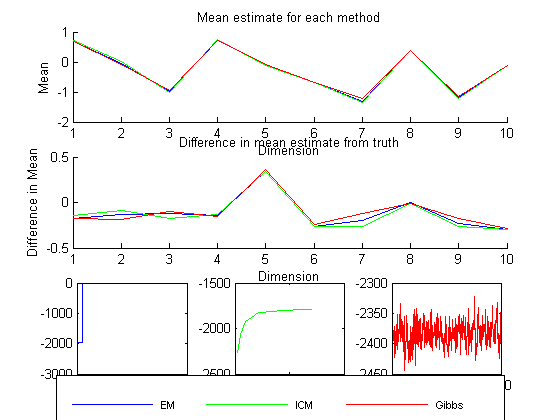

Compare the results of imputation on a MVN using three imputation methods: EM, ICM, and Gibbs
setSeed(1);
d = 10; n = 100;
mu = randn(d,1); Sigma = randpd(d);
pcMissing = 0.2;
model = struct('mu', mu, 'Sigma', Sigma);
Xfull = gaussSample(model, n);
missing = rand(n,d) < pcMissing;
Xmiss = Xfull;
Xmiss(missing) = NaN;
Xhid = Xfull;
Xhid(~missing) = NaN;
verb = true;
fprintf('EM First\n')
[model, LLtrace{1}] = gaussMissingFitEm(Xmiss, 'verbose', verb, 'maxIter', 500);
[muHat{1}, SigmaHat{1}] = structvals(model);
fprintf('Now ICM\n')
[model, LLtrace{2}] = gaussMissingFitICM(Xmiss, 'verbose', verb);
muHat{2} = model.mu;
SigmaHat{2} = model.Sigma;
fprintf('Now Gibbs\n')
[model, dataSamples, LLtrace{3}] = gaussMissingFitGibbs(Xmiss, 'mu0', nanmeanPMTK(Xmiss), 'Lambda0', diag(nanvar(Xmiss)), 'k0', 0.01, 'dof', d + 2, 'verbose', verb);
muSamples = model.mu; SigmaSamples = model.Sigma;
muHat{3} = mean(muSamples);
SigmaHat{3} = mean(SigmaSamples,3);
method = {'EM', 'ICM', 'Gibbs'};
fprintf('True mean:\t\t %s\n', mat2str(rowvec(mu),2))
for m=1:length(method)
fprintf('Mean for method %s:\t %s\n', method{m}, mat2str(rowvec(muHat{m}),2))
end
plotOpts = {'b','g','r'};
figure(); subplot(3,3,1:3); hold on;
for m=1:length(method)
plot(1:d, rowvec(muHat{m}), plotOpts{m})
end
xlabel('Dimension'); ylabel('Mean');
title('Mean estimate for each method');
subplot(3,3,4:6); hold on;
for m=1:length(method)
plot(1:d, rowvec(muHat{m}) - rowvec(mu), plotOpts{m});
end
xlabel('Dimension'); ylabel('Difference in Mean');
title('Difference in mean estimate from truth');
a = zeros(3,4);
for m=1:length(method)
subplot(3,3,6+m);
h{m} = plot(LLtrace{m}, plotOpts{m});
a(m,:) = axis;
set(gca,'XTickLabel',num2str(get(gca,'XTick').'));
set(gca,'YTickLabel',num2str(get(gca,'YTick').'))
end
subplot(3,3,[1:3]);
L = legend(method);
set(L, 'position', [0.1, 0.02, 0.8, 0.03]);
set(L, 'fontsize', 8);
set(L, 'orientation', 'horizontal');
EM First
1: LL = -2080.407
2: LL = -2022.980
3: LL = -1994.256
4: LL = -1978.573
5: LL = -1969.137
6: LL = -1962.982
7: LL = -1958.750
8: LL = -1955.739
9: LL = -1953.536
10: LL = -1951.881
11: LL = -1950.608
12: LL = -1949.607
13: LL = -1948.802
14: LL = -1948.144
15: LL = -1947.599
16: LL = -1947.140
17: LL = -1946.749
18: LL = -1946.414
19: LL = -1946.123
20: LL = -1945.870
21: LL = -1945.647
22: LL = -1945.450
23: LL = -1945.275
Now ICM
1: LL = -2265.939
2: LL = -2070.704
3: LL = -1975.069
4: LL = -1928.008
5: LL = -1903.059
6: LL = -1880.911
7: LL = -1856.220
8: LL = -1837.670
9: LL = -1829.118
10: LL = -1824.069
11: LL = -1819.984
12: LL = -1816.417
13: LL = -1813.246
14: LL = -1810.407
15: LL = -1807.860
16: LL = -1805.572
17: LL = -1803.516
18: LL = -1801.669
19: LL = -1800.008
20: LL = -1798.516
21: LL = -1797.175
22: LL = -1795.970
23: LL = -1794.885
24: LL = -1793.909
25: LL = -1793.029
26: LL = -1792.235
27: LL = -1791.518
28: LL = -1790.869
Now Gibbs
1: LL = -2371.991
2: LL = -2361.984
3: LL = -2374.551
4: LL = -2376.693
5: LL = -2379.131
6: LL = -2380.249
7: LL = -2395.381
8: LL = -2384.006
9: LL = -2383.849
10: LL = -2371.389
11: LL = -2386.092
12: LL = -2397.514
13: LL = -2422.920
14: LL = -2410.070
15: LL = -2407.830
16: LL = -2380.632
17: LL = -2388.749
18: LL = -2405.884
19: LL = -2400.800
20: LL = -2383.282
21: LL = -2370.722
22: LL = -2382.132
23: LL = -2351.614
24: LL = -2378.269
25: LL = -2378.897
26: LL = -2388.585
27: LL = -2409.307
28: LL = -2384.294
29: LL = -2376.709
30: LL = -2376.728
31: LL = -2385.785
32: LL = -2379.852
33: LL = -2371.825
34: LL = -2383.382
35: LL = -2381.471
36: LL = -2356.670
37: LL = -2345.277
38: LL = -2333.575
39: LL = -2350.263
40: LL = -2396.278
41: LL = -2395.562
42: LL = -2386.822
43: LL = -2373.264
44: LL = -2359.518
45: LL = -2375.119
46: LL = -2382.273
47: LL = -2396.293
48: LL = -2363.273
49: LL = -2388.681
50: LL = -2388.084
51: LL = -2372.859
52: LL = -2375.112
53: LL = -2377.911
54: LL = -2413.025
55: LL = -2383.046
56: LL = -2355.524
57: LL = -2382.226
58: LL = -2443.471
59: LL = -2431.545
60: LL = -2420.855
61: LL = -2397.045
62: LL = -2425.257
63: LL = -2397.600
64: LL = -2398.846
65: LL = -2394.490
66: LL = -2362.807
67: LL = -2395.286
68: LL = -2353.537
69: LL = -2375.896
70: LL = -2387.276
71: LL = -2407.860
72: LL = -2383.681
73: LL = -2382.108
74: LL = -2408.229
75: LL = -2411.696
76: LL = -2407.539
77: LL = -2430.599
78: LL = -2394.092
79: LL = -2426.689
80: LL = -2410.611
81: LL = -2423.463
82: LL = -2408.104
83: LL = -2419.142
84: LL = -2430.121
85: LL = -2412.496
86: LL = -2403.479
87: LL = -2370.923
88: LL = -2387.897
89: LL = -2420.097
90: LL = -2401.758
91: LL = -2381.505
92: LL = -2425.966
93: LL = -2409.614
94: LL = -2390.122
95: LL = -2395.413
96: LL = -2373.898
97: LL = -2409.137
98: LL = -2377.163
99: LL = -2367.524
100: LL = -2358.554
101: LL = -2343.152
102: LL = -2399.454
103: LL = -2368.672
104: LL = -2374.529
105: LL = -2366.703
106: LL = -2409.580
107: LL = -2435.656
108: LL = -2377.233
109: LL = -2397.017
110: LL = -2364.530
111: LL = -2342.510
112: LL = -2367.669
113: LL = -2380.515
114: LL = -2398.043
115: LL = -2401.352
116: LL = -2388.777
117: LL = -2395.609
118: LL = -2377.990
119: LL = -2351.311
120: LL = -2371.462
121: LL = -2386.851
122: LL = -2404.506
123: LL = -2400.556
124: LL = -2360.406
125: LL = -2380.026
126: LL = -2367.668
127: LL = -2366.521
128: LL = -2385.219
129: LL = -2408.560
130: LL = -2366.134
131: LL = -2358.236
132: LL = -2374.496
133: LL = -2384.189
134: LL = -2404.388
135: LL = -2409.540
136: LL = -2385.371
137: LL = -2393.751
138: LL = -2388.530
139: LL = -2366.530
140: LL = -2379.834
141: LL = -2394.796
142: LL = -2383.113
143: LL = -2369.676
144: LL = -2356.775
145: LL = -2350.053
146: LL = -2377.149
147: LL = -2353.896
148: LL = -2354.713
149: LL = -2393.537
150: LL = -2406.041
151: LL = -2397.157
152: LL = -2381.516
153: LL = -2384.935
154: LL = -2398.412
155: LL = -2373.022
156: LL = -2386.410
157: LL = -2401.627
158: LL = -2367.267
159: LL = -2380.581
160: LL = -2364.019
161: LL = -2368.091
162: LL = -2372.941
163: LL = -2365.698
164: LL = -2371.154
165: LL = -2397.858
166: LL = -2391.655
167: LL = -2361.033
168: LL = -2370.323
169: LL = -2392.965
170: LL = -2396.152
171: LL = -2401.722
172: LL = -2380.373
173: LL = -2387.249
174: LL = -2377.157
175: LL = -2373.949
176: LL = -2348.981
177: LL = -2400.522
178: LL = -2403.653
179: LL = -2406.067
180: LL = -2389.111
181: LL = -2387.479
182: LL = -2344.116
183: LL = -2377.297
184: LL = -2370.561
185: LL = -2407.280
186: LL = -2411.936
187: LL = -2391.491
188: LL = -2392.075
189: LL = -2381.658
190: LL = -2390.337
191: LL = -2388.069
192: LL = -2381.570
193: LL = -2386.701
194: LL = -2365.732
195: LL = -2381.081
196: LL = -2383.019
197: LL = -2385.271
198: LL = -2383.139
199: LL = -2403.492
200: LL = -2382.120
201: LL = -2379.101
202: LL = -2357.473
203: LL = -2364.231
204: LL = -2375.429
205: LL = -2377.492
206: LL = -2405.815
207: LL = -2379.863
208: LL = -2368.014
209: LL = -2383.924
210: LL = -2391.183
211: LL = -2350.196
212: LL = -2363.598
213: LL = -2359.715
214: LL = -2360.647
215: LL = -2389.647
216: LL = -2379.209
217: LL = -2409.166
218: LL = -2400.763
219: LL = -2407.958
220: LL = -2379.647
221: LL = -2388.899
222: LL = -2355.712
223: LL = -2356.150
224: LL = -2368.565
225: LL = -2363.851
226: LL = -2382.616
227: LL = -2381.640
228: LL = -2381.090
229: LL = -2394.547
230: LL = -2399.608
231: LL = -2398.965
232: LL = -2395.721
233: LL = -2383.607
234: LL = -2397.080
235: LL = -2392.736
236: LL = -2413.196
237: LL = -2409.334
238: LL = -2391.564
239: LL = -2403.575
240: LL = -2390.175
241: LL = -2422.097
242: LL = -2393.633
243: LL = -2383.236
244: LL = -2397.756
245: LL = -2355.994
246: LL = -2361.727
247: LL = -2374.081
248: LL = -2393.859
249: LL = -2399.435
250: LL = -2368.436
251: LL = -2398.927
252: LL = -2391.815
253: LL = -2411.622
254: LL = -2412.095
255: LL = -2411.601
256: LL = -2401.566
257: LL = -2421.232
258: LL = -2375.522
259: LL = -2395.756
260: LL = -2379.880
261: LL = -2377.887
262: LL = -2364.775
263: LL = -2377.261
264: LL = -2403.131
265: LL = -2395.398
266: LL = -2355.104
267: LL = -2388.790
268: LL = -2388.971
269: LL = -2386.857
270: LL = -2390.413
271: LL = -2402.156
272: LL = -2411.146
273: LL = -2381.015
274: LL = -2392.378
275: LL = -2382.370
276: LL = -2391.902
277: LL = -2359.645
278: LL = -2367.089
279: LL = -2373.169
280: LL = -2392.215
281: LL = -2376.280
282: LL = -2374.932
283: LL = -2388.096
284: LL = -2386.318
285: LL = -2384.019
286: LL = -2395.329
287: LL = -2384.929
288: LL = -2380.439
289: LL = -2364.647
290: LL = -2359.106
291: LL = -2374.811
292: LL = -2413.801
293: LL = -2376.645
294: LL = -2402.226
295: LL = -2386.532
296: LL = -2367.596
297: LL = -2400.275
298: LL = -2407.849
299: LL = -2377.372
300: LL = -2398.626
301: LL = -2405.235
302: LL = -2369.304
303: LL = -2376.845
304: LL = -2366.998
305: LL = -2354.902
306: LL = -2379.345
307: LL = -2358.019
308: LL = -2352.736
309: LL = -2369.536
310: LL = -2364.017
311: LL = -2383.291
312: LL = -2368.906
313: LL = -2398.397
314: LL = -2417.577
315: LL = -2413.673
316: LL = -2398.161
317: LL = -2369.485
318: LL = -2357.699
319: LL = -2386.837
320: LL = -2389.640
321: LL = -2377.687
322: LL = -2380.764
323: LL = -2393.080
324: LL = -2376.905
325: LL = -2362.683
326: LL = -2381.070
327: LL = -2365.924
328: LL = -2381.817
329: LL = -2354.277
330: LL = -2372.793
331: LL = -2373.512
332: LL = -2372.016
333: LL = -2386.676
334: LL = -2392.595
335: LL = -2356.881
336: LL = -2364.243
337: LL = -2363.243
338: LL = -2409.657
339: LL = -2385.683
340: LL = -2389.795
341: LL = -2418.289
342: LL = -2406.678
343: LL = -2399.819
344: LL = -2392.877
345: LL = -2382.773
346: LL = -2365.602
347: LL = -2367.699
348: LL = -2376.915
349: LL = -2379.836
350: LL = -2341.726
351: LL = -2368.449
352: LL = -2374.155
353: LL = -2418.148
354: LL = -2390.170
355: LL = -2369.049
356: LL = -2398.388
357: LL = -2382.114
358: LL = -2378.606
359: LL = -2391.017
360: LL = -2380.918
361: LL = -2394.102
362: LL = -2385.207
363: LL = -2411.111
364: LL = -2373.365
365: LL = -2391.446
366: LL = -2413.309
367: LL = -2375.619
368: LL = -2366.576
369: LL = -2380.392
370: LL = -2387.057
371: LL = -2378.824
372: LL = -2373.365
373: LL = -2361.475
374: LL = -2368.388
375: LL = -2375.888
376: LL = -2376.967
377: LL = -2375.946
378: LL = -2338.476
379: LL = -2322.255
380: LL = -2355.048
381: LL = -2393.892
382: LL = -2391.692
383: LL = -2427.134
384: LL = -2388.161
385: LL = -2404.586
386: LL = -2418.100
387: LL = -2415.551
388: LL = -2415.914
389: LL = -2400.528
390: LL = -2404.129
391: LL = -2396.669
392: LL = -2378.668
393: LL = -2352.339
394: LL = -2372.714
395: LL = -2364.199
396: LL = -2374.538
397: LL = -2340.160
398: LL = -2352.558
399: LL = -2367.092
400: LL = -2374.521
401: LL = -2398.397
402: LL = -2373.661
403: LL = -2398.784
404: LL = -2369.988
405: LL = -2380.390
406: LL = -2376.171
407: LL = -2403.472
408: LL = -2386.127
409: LL = -2389.433
410: LL = -2410.753
411: LL = -2374.555
412: LL = -2371.458
413: LL = -2392.585
414: LL = -2385.025
415: LL = -2354.200
416: LL = -2361.006
417: LL = -2375.721
418: LL = -2380.594
419: LL = -2388.531
420: LL = -2367.605
421: LL = -2377.156
422: LL = -2375.978
423: LL = -2371.700
424: LL = -2380.110
425: LL = -2373.712
426: LL = -2369.608
427: LL = -2364.269
428: LL = -2343.541
429: LL = -2371.498
430: LL = -2367.064
431: LL = -2402.182
432: LL = -2393.228
433: LL = -2384.601
434: LL = -2386.128
435: LL = -2409.196
436: LL = -2398.354
437: LL = -2396.056
438: LL = -2390.167
439: LL = -2385.521
440: LL = -2355.337
441: LL = -2368.110
442: LL = -2392.593
443: LL = -2374.625
444: LL = -2372.095
445: LL = -2379.042
446: LL = -2405.404
447: LL = -2373.519
448: LL = -2378.831
449: LL = -2389.243
450: LL = -2396.152
451: LL = -2364.713
452: LL = -2386.317
453: LL = -2405.639
454: LL = -2389.894
455: LL = -2385.376
456: LL = -2387.830
457: LL = -2380.336
458: LL = -2379.902
459: LL = -2347.131
460: LL = -2337.339
461: LL = -2375.385
462: LL = -2365.797
463: LL = -2364.468
464: LL = -2385.624
465: LL = -2396.434
466: LL = -2394.785
467: LL = -2392.563
468: LL = -2400.075
469: LL = -2383.863
470: LL = -2387.723
471: LL = -2367.921
472: LL = -2389.942
473: LL = -2399.406
474: LL = -2398.549
475: LL = -2374.089
476: LL = -2380.531
477: LL = -2377.788
478: LL = -2342.644
479: LL = -2365.141
480: LL = -2354.443
481: LL = -2358.341
482: LL = -2332.141
483: LL = -2372.718
484: LL = -2362.465
485: LL = -2373.824
486: LL = -2391.852
487: LL = -2382.458
488: LL = -2386.966
489: LL = -2415.155
490: LL = -2396.708
491: LL = -2387.283
492: LL = -2390.803
493: LL = -2423.882
494: LL = -2417.083
495: LL = -2393.761
496: LL = -2384.870
497: LL = -2398.788
498: LL = -2356.411
499: LL = -2348.521
500: LL = -2351.390
True mean: [0.86 0.094 -0.85 0.87 -0.44 -0.43 -1.1 0.4 -0.96 0.17]
Mean for method EM: [0.69 -0.038 -0.97 0.73 -0.097 -0.69 -1.3 0.39 -1.2 -0.13]
Mean for method ICM: [0.72 0.0069 -1 0.74 -0.1 -0.69 -1.4 0.39 -1.2 -0.12]
Mean for method Gibbs: [0.68 -0.092 -0.95 0.72 -0.078 -0.67 -1.2 0.38 -1.1 -0.11]
